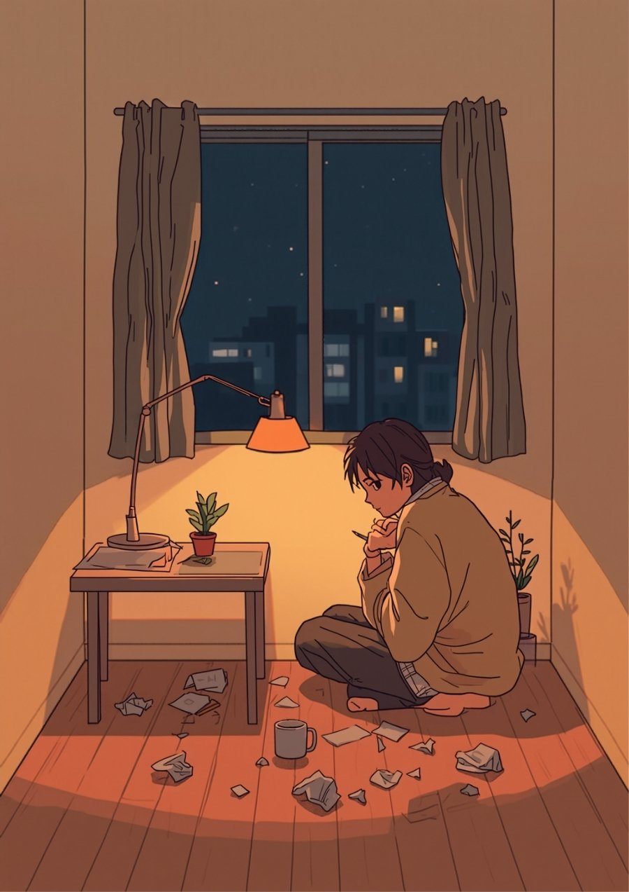
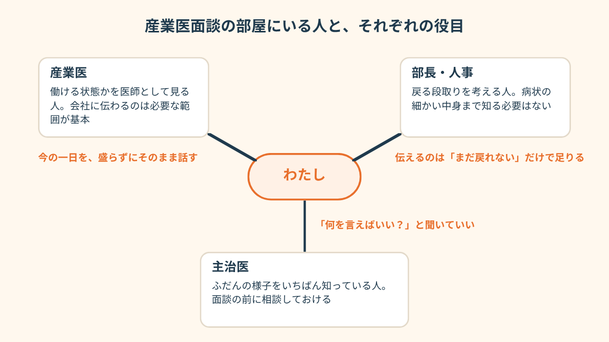
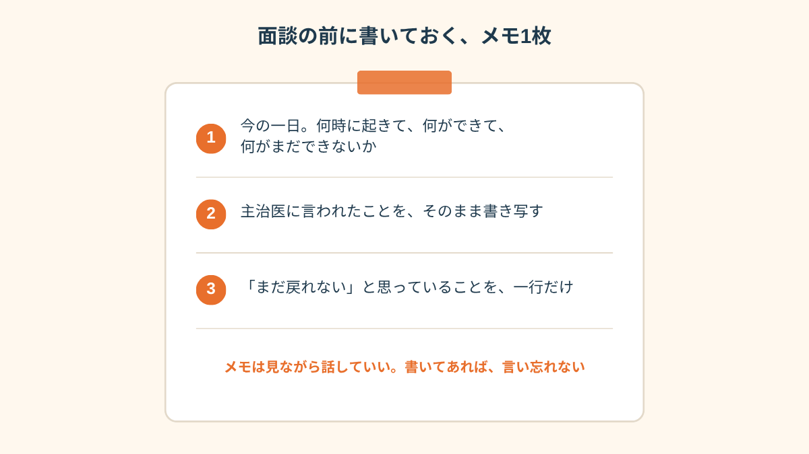

人事から来たメールは、たったそれだけでした。
その晩、話すことをメモに書いて、消して、また書いて。3回書き直しました。
なのに当日、私の口から最初に出たのは「おかげさまで、だいぶ良くなりました」だったんです。

「部長も同席します」の一行
休職して3ヶ月目のことでした。
産業医面談そのものは、前にも一回だけ受けたことがあります。そのときは先生と二人で、20分くらい、ふつうに体調の話をして終わり。
だから今回も同じだろうと思ってたんです。
メールの2行目を読むまでは。
「部長」。
休む前、最後の1ヶ月で、いちばん顔を合わせたくなかった人です。
別に怒鳴られたとかではないんです。ただ、部長の前だと、「ちゃんとした社員の顔」をしないといけない気がして、それがもう体に染みついてる。
3人で何を話すんだろう。
「いつ戻れるの？」って聞かれるのかな。
「まだです」って言ったら、部長の顔、どうなるんだろう。
……そこから先は、考えるだけで胃がきゅっとなって、スマホを置きました。
メモを3回書き直した夜
面談の前の晩、話すことを整理しようと思って、メモ帳を開きました。
「朝はまだ起きられない日が多い」
「会社の最寄り駅の名前を聞くだけで、胸がざわっとする」
「戻る日のことは、まだ考えられない」
書いて、読み返して、これを部長の前で言うのか、と思った瞬間に手が止まりました。
これ言ったら、「じゃあ、いつになったら戻れるの」って話になるよな。
下手したら、「戻る気あるの？」って思われるよな。
「朝は少しずつ起きられる日が増えてきた」
「散歩もできるようになった」
嘘ではないんです。週に2回くらいは、コンビニまで歩けてた。
でも「増えてきた」は、ちょっと盛ってる。自分でわかってる。
2時を過ぎたあたりで、もう何が正解なのか分からなくなって。
「体調はどうか」と聞かれたときの答えを、敬語の言い回しまで含めて3パターン書いたところで、力尽きて寝ました。
いや、寝てない。横になって天井を見てただけです。
「1年半休んでて、半年ぶりの面談だったんです。正直、もう戻れる気がしなかった。でもそれを言ったら『じゃあ辞めれば？』ってなるんじゃないかって、面談の1週間前から毎晩それ考えてて。辞めたくないのか辞めたいのか、自分でも分かんないんですよ。分かんないまま行ったら、先生に『辞めるかどうかを決めるのは私の仕事じゃないですよ』って言われて。え、そうなの？って。1週間ぶんの寝不足、なんだったんだろうって。」
口から出たのは「だいぶ良くなりました」
面談は、会社の会議室でした。
先生がいて、その隣に部長がいて、テーブルの上には私の診断書のコピー。
「どうですか、最近は」
先生がやわらかく聞いてくれた、その次の瞬間です。
「おかげさまで、だいぶ良くなりました」。
自分の声なのに、自分で言った気がしませんでした。
部長がちょっとほっとした顔をして、それを見た私もなぜかほっとして。
3回書き直したメモは、カバンの中から一度も出てきませんでした。
そのあとは、たぶん30分くらい。
「散歩はできてます」「夜は、まあまあ寝られてます」。
2回目のメモに書いた、ちょっと盛ったほうの私が、勝手に全部しゃべってくれました。
最後に部長が「じゃあ、そろそろ戻る時期も考えていこうか」と言って。
私は「はい」と言いました。
「はい」以外の返事を、あの部屋で言える気がしなかったんです。
帰りの電車で、窓に映った自分の顔を見て、ああやっちゃった、と思いました。
家に着いてから、夜まで起き上がれませんでした。
「だいぶ良くなった人」は、たぶんこんなふうに寝込まない。

「面談、会社でやるから来てって言われて。しかも上司に『みんながいるフロアを通って、奥の部屋まで来てね』って。いや無理でしょって思ったけど、無理ですって言えなくて。当日、駅のトイレに20分こもって、結局行ったんですけど、フロア通るとき誰とも目を合わせられなくて、面談の中身ほとんど覚えてないです。あとで人事の人に『次から別の入口使っていいよ』って言われて、え、それ最初に言ってよって。言えなかった私も私なんですけど。」
2回目は、メモを読み上げた
次の診察で、主治医にこの話をしました。
「面談で、良くなったって言っちゃいました」って。
先生は笑いもせず、「じゃあ、次は紙に書いて持っていけばいいですよ。読み上げたっていいんだから」と。
読み上げていいんだ、って、そのとき初めて思いました。
面談って、ちゃんと自分の言葉でスラスラ話さないといけない場だと思い込んでたので。
1ヶ月後の2回目の面談。今度は、メモを最初から机の上に出しました。
書いたのは3行だけ。
- 朝、起きられるのは週に2日くらい
- 主治医からは「まだ復職の時期を決める段階ではない」と言われている
- 会社の近くまで行くと、動悸がする
「すみません、うまく話せないので、読みます」と言って、読みました。
声は震えてたと思います。途中で一回、つっかえた。
部長は、前回みたいにほっとした顔はしませんでした。
でも、怒った顔もしなかった。ただ「そうか」と言って、手帳に何か書いてました。
先生は「じゃあ、戻る時期は主治医の先生の意見を聞いてからにしましょう。今日決めなくていいです」と。
……今日決めなくていい。
それを聞いた帰りの電車は、前回とはちょっと違いました。
元気になったわけじゃない。まだ全然。でも、窓に映った自分の顔から目をそらさずにいられた。それくらいの違いです。

この記事に、聞いてみたいことはありますか？
「自分の場合はどうなんだろう」と思ったことを、気軽に書いてみてください。いただいた質問は個別にお返事したうえで、匿名で記事にすることがあります。